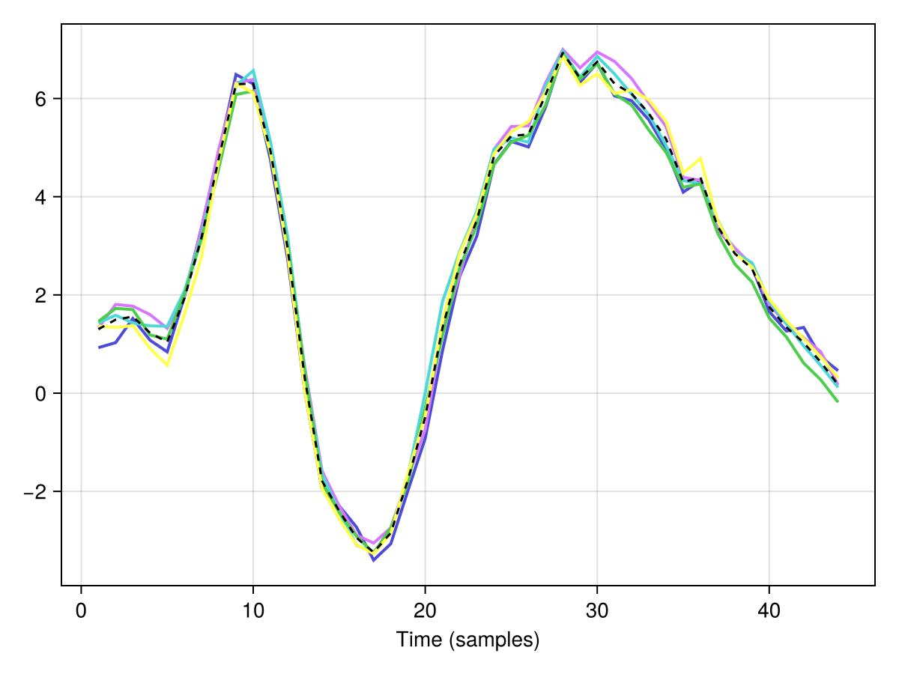

Cross-validated Unfold models
This tutorial shows how to run an Unfold model with k-fold cross-validation.
cross validation is not yet implemented for deconvolution models - not because it is hard, but because I didnt do it yet
Setup
using Unfold
using UnfoldSim
using Random
using Statistics
using UnfoldMakie, CairoMakie
eeg, evts = UnfoldSim.predef_eeg(; return_epoched = true, noiselevel = 15)([10.688811360704506 -21.962460781837876 … 13.155407280464756 7.004265290077822; -1.43459355551717 -19.02048695957436 … 7.846848082403746 -5.000311556800763; … ; -6.553487928276634 -23.8871311282609 … -2.5730011130260984 -21.772988738765104; -4.074053769206997 -15.0753294807487 … 3.937492801380999 -25.673145843995762], 2000×3 DataFrame
Row │ continuous condition latency
│ Float64 String Int64
──────┼────────────────────────────────
1 │ 2.77778 car 62
2 │ -5.0 face 132
3 │ -1.66667 car 196
4 │ -5.0 car 249
5 │ 5.0 car 303
6 │ -0.555556 car 366
7 │ -2.77778 car 432
8 │ -2.77778 face 483
⋮ │ ⋮ ⋮ ⋮
1994 │ 1.66667 car 119798
1995 │ 2.77778 car 119856
1996 │ -5.0 car 119925
1997 │ 3.88889 car 119978
1998 │ -5.0 face 120030
1999 │ -0.555556 face 120096
2000 │ -2.77778 car 120154
1985 rows omitted)Define formula and basis function for a mass-univariate model.
f = @formula 0 ~ 1 + conditionCross-validation solver
solver_cv wraps the default solver, but runs it for each cross-validation fold
cv_solver = solver_cv(n_folds = 5, shuffle = true) # shuffle is true by default(::Unfold.var"#cv_kernel#182"{Random.MersenneTwister, Int64, Bool, Unfold.var"#solver_cv##2#solver_cv##3", Bool}) (generic function with 1 method)Now we can fit the model with the CV solver.
m_cv = fit(UnfoldModel, f, evts, eeg, 1:size(eeg, 1); solver = cv_solver)The 4th dimension contains the CV-fold (channel, time, coefficient, fold).
size(modelfit(m_cv).estimate)(1, 44, 2, 5)You also get train/test indices for each fold (we have to index once into the first "event", e.g. you could run multiple events / formulas in one model)
length(m_cv.modelfit.folds[1])5we can also access e.g. the third fold and check the train/test indices. Let's display only the first 6 indices
first(m_cv.modelfit.folds[1][3].train, 6)6-element Vector{Int64}:
198
189
1115
1522
874
1086coef and coeftable`
For LinearModelFitCV, coef(m) returns the mean over folds. This means coeftable(m_cv) reports the fold-averaged estimates.
first(coeftable(m_cv), 6)| Row | channel | coefname | estimate | eventname | group | stderror | time |
|---|---|---|---|---|---|---|---|
| Int64 | String | Float64 | DataType | Nothing | Nothing | Int64 | |
| 1 | 1 | (Intercept) | 1.30236 | Any | 1 | ||
| 2 | 1 | (Intercept) | 1.49632 | Any | 2 | ||
| 3 | 1 | (Intercept) | 1.55933 | Any | 3 | ||
| 4 | 1 | (Intercept) | 1.22816 | Any | 4 | ||
| 5 | 1 | (Intercept) | 1.03855 | Any | 5 | ||
| 6 | 1 | (Intercept) | 1.92847 | Any | 6 |
You can access fold-specific estimates directly from modelfit.estimate.
fold_1_estimate = modelfit(m_cv).estimate[:, :, :, 1]
size(fold_1_estimate)(1, 44, 2)Finally let's plot our estimates
f, ax, h = series(modelfit(m_cv).estimate[1, :, 1, :]')
lines!(coef(m_cv)[1, :, 1], color = :black, linestyle = :dash)
ax.xlabel = "Time (samples)"
f
The colored lines are the fold-specific estimates, the dashed black line is the mean across folds.
This page was generated using Literate.jl.